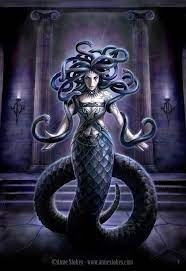

Medusa
Somewhere in Greece a cursed creature remained hidden among all the
monsters who inhabited the nightmares of the Hellenic this was
surely one of the most feared
many brave heroes dared to hunt
this
creature but none ever returned they said that this being was so hideous that no one could face it her name was Medusa but Medusa was not always like that she once had been oneof
the most beautiful women
ever to walk the earth she was born of the union of two primordial sea deities
forces and Seto and she cameinto the world as a normal child. Medusa had two
sisters steno and Uriel. They were Gorgons creatures that combined women and
serpent traits since childhood Medusa was devoted to the goddess Athena
and
when playing with her sisters she always pretended to be the goddess Athena
while her sisters love to be the villains together with the girls she also
played with a boy called if eglise who is Medusa's best friend the
two
were inseparable Medusa grew and became more beautiful every day Medusa's
charms made the young
if
achlys an easy target for Eros the God of love in love if achlys declared his
affection for Medusa the young lady deeply loved the boy but she had the dream
of becoming a priestess of Athena and could not cave in to the temptation of
love when she reached the appropriate age the young woman started her
preparation to
become
an Athena priestess the temples apprentices needed to have pristine conduct and
discipline all their acts could be reflected in the goddesses reputation one of
the major requirements for becoming a priestess of Athena was absolute purity.

They were to mirror themselves in Athena therefore the young women should
remain virgins just like their goddess who never surrendered to the influence
of Eros and Aphrodite Medusa became a perfect priestess maybe even to perfect the
rituals conducted by Medusa kept attracting more followers delighted with the
way in which that beautiful young woman conducted each of her activities.
Medusa
had a beautiful fluttering hair with her movements it mesmerized those who
stared at her a gullible man dared to say that Medusa's hair was more beautiful
than Athena's the goddess from the top of Mount Olympus noticed a commotion in
one of her temples. She realized that many were not there to worship her but rather
to see the charming priestess Athena resisted the temptation to do anything
against those who shifted their focus from her to Medusa. The goddess knew that
although this was wrong the young priestess was not to blame after all she was
only doing her work in the best way she could.
Meanwhile at a Mount Olympus, Poseidon noticed the goddesses restlessness the sea God and Athena had a major
rivalry they disputed the right to be the city's patron God which was the
capital of the Attica region. the goddess was the winner of this dispute and in
honor of her new protective goddess the city changed its name to Athens. Poseidon
did not accept defeat well so he was waiting for the right moment to take
revenge on the goddess. the god
noticed
that Athena was focused on her most beautiful and gracious priestess. he decided
that this beautiful young woman could be an instrument of his revenge. Poseidon
plotted to tarnish Athena's reputation striking her most unblemished follower. in the meantime Medusa kept carrying her normal life, unaware that she was being
watched by the Olympic gods. Medusa walked by the sea and lurking concealed
among the waves the god of the Seas followed her. she heard someone say her name, the call came from the ocean Poseidon emerged from the sea in all his paramount
glory the God used his charm to seduce Athena's priestess but Medusa albeit
stunned by all his splendor did not forget her vows and rejected Poseidon's
advance he did not accept the rejection and grabbed Medusa's arm she reacted
unexpectedly and violently hitting him in the face managed to get rid of the
god. Medusa ran to Athena's temple the only place where she felt safe but
Poseidon
consumed
by lust went after the young woman.
Poseidon was almost reaching her when the
brave ethically stood between the God and Medusa despite his bravery, achlys
represented no obstacle to the God who with one blow through the young man away. Medusa stepped inside the temple her goddess and knelt before her statue she
asked for protection when she heard the god of the Seas heavy footsteps approaching.
the God approached the encircled young woman who cried out for help. Poseidon
possessed her on the goddess
altar
by force the God happily left the temple his revenge had gone better than planned
besides having corrupted the best priestess of Athena. he also degraded her
beloved temple which the goddess deeply treasured for its purity. Medusa felt
ashamed and filthy when the goddess Athena took the form of her
statue
and furiously blamed the priestess Athena said that if it had not been for her
flamboyant presence which diverted men from the path of virtue and purity and
for her vanity which made her irresistible none of that would have happened, her
temple would have remained immaculate and her honor as a goddess
would
not have been diminished. Athena decided to punish the priestess who is now
impure and guilty for the
dishonoring
of the temple. she was to care for the night arrived and Ackley's regained
consciousness after
the
strong blow he suffered he then began to search for Medusa he heard her cry in
the temple of Athena arriving there, he encountered Medusa sitting on the ground
crying in pitch-black darkness. she asked him not to come near because she did
not want to be seen like that.
concerned her friend nevertheless approached
offering words of comfort but when he touched the young woman's shoulder a
serpent bit his hand. Medusa
frightening Lea turned and the two youngsters looked at each other the young achlys became a stone made statue in despair. Medusa wept embracing the statue
of her best friend not to hurt anyone else
she
ran away but during her escape she was cited by some residents of the city those
who looked into her eyes became petrified.
people told each other about that
horrible snake haired creature, a group was assembled to hunt the creature. these
men were found two days later completely petrified and with terrified semblances. Medusa had no intention of hurting anyone she simply wanted to defend herself
from unfair aggression. she decided to hide in a region that had been abandoned
by its inhabitants for centuries. there she found an ancient temple in ruins
which she turned into her hiding spots many warriors attempted to capture the
Gorgon for glory but none
ever
returned.
isolated Medusa kept losing her remaining humanity. her reputation as a
terrible monster became
legendary
Medusa survived by hunting small animals and rodents one of her prey led to an
unexpected reunion Medusa encountered an ancient bust which represented the
goddess Athena. she realized that those ruins had once been one of the first
temples to give shelter to the goddess this discovery revived her ancient
habits. Medusa started to care for the temple and to exalt the glory of the
goddess, the dilettante daughter of Zeus. the supreme god of Olympus albeit
living a miserable existence the young woman still showed her
nobility
in her heavenly residence. the goddess did not fail to notice the Honorable acts
of her former priestess she realized that her actions could not be justified by
vanity since no one could witness those acts and she felt sorry for having
enforced such a cruel and irreversible punishment on the girl while conducting
one of her many rituals Medusa heard the steps of another invader.
Medusa's
bestiality re-emerged and she prepared to face another opponent, the daring
warrior walked cautiously in the creatures abode. while she prepared the ambush sneaking
close to the warrior she was stunned when noticing that he was carrying
Athena's shield the sacred aegis that at once belonged to Zeus Athena shield
was so polished that it reflected like a mirror and using the reflection the
warrior realized that the monster was behind him with a sharp blow the young
warrior severed Medusa's head from her body.
Medusa was dead and her blood kept
dripping to the ground the warrior, anonymous until that point would go down in
history under the name of Perseus after completing his labors
Perseus
returned to Athena her aegis and also gave her Medusa's head. what few knew was
that Medusa carried Poseidon's divine seed and from her blood cry sour was born
the warrior of the golden sword not only that another beautiful creature a
winged horse also emerged the majestic Pegasus was the purest of all creatures embodying
all the original purity that had been stolen from his mother many believed that
the help Athena provided to Perseus when she handed him her precious shield was
another act of retaliation against Medusa actually she only wished to free the
young girl from that dreadful existence which had been
unjustly
imposed upon her.
Athena glorified Medusa by adding the Gorgons head to her
shield the image of
the
loyal priestess was now internalized beside the goddess she loved so much
Download